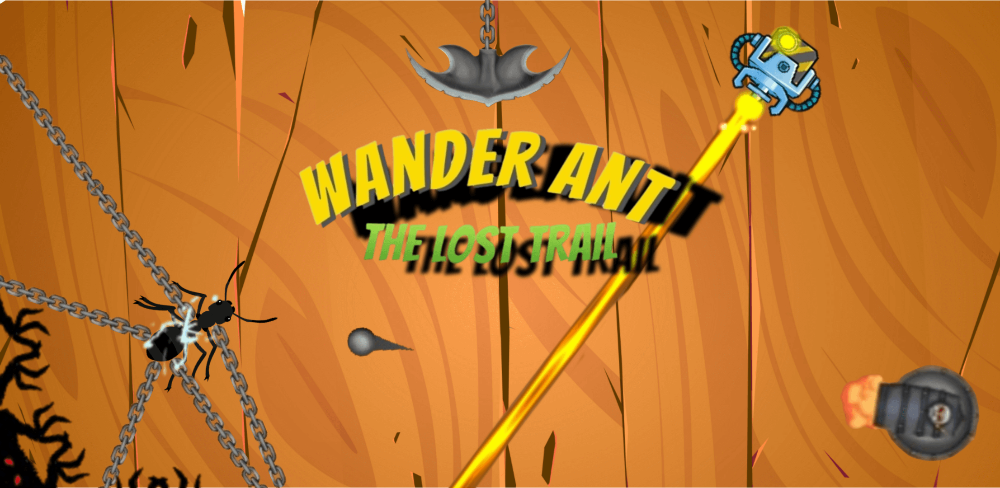

Wander Ant
Released

Wander Ant is a creative puzzle adventure where players guide a lost ant through tricky traps to reach home. The gameplay blends logic, timing, and exploration — all crafted with care using Unity. The ant navigates through laser traps, moving tiles, and secret portals while players build paths using drag-and-drop mechanics.


🧠 Core Features
- Unique pipe-connection puzzles with real-time ant movement
- Visually clean cartoonish style with black outlines
- Smart level design encouraging creative thinking
- Playable on mobile
- Ads designed for minimal interruption (extra pipes, energy rewards)
- Power-ups and traps
- Level-based difficulty progression
🧩 Technologies Used
Unity
C#
2D Physics
Scriptable Objects
AdMob
📜 About the Game
The game follows a small ant who lost its home and is trying to find its way back, representing persistence and creativity. After gathering feedback from friends, family, and players, the game was refined and released — reaching thousands of downloads with positive reviews.
💡 Challenges
- Developed a precise grid-based snap system for seamless drag-and-drop gameplay.
- Resolved complex overlapping and alignment issues during path creation.
- Implemented procedural object spawning to enhance replayability and variety.
- Created a custom light collision detection system for dynamic interactions.
- Built laser effects using Shader Graph for optimized visual performance.
- Optimized physics calculations to maintain a consistent 60 FPS experience.
- Designed and animated UI elements for smooth and engaging transitions.
- Composed and integrated sound effects that perfectly match the game’s tone and atmosphere.
🎮 Availability
Available on Google Play and itch.io.